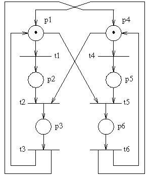

Third lecture
Friday 9 March 2012, 16:15 to 18:15
Accessible online at: http://goo.gl/TKSKW
First we will model transition systems which communicate through named channels:
- Warm-up: Open ts.pml to see how one easily can model transition systems in Spin. Do a random simulation to see how the channels work. Draw the transition systems which we have modeled here.
- The Spin model ab2.pml contains a model of the alternating bit protocol.
- Draw the transition systems which we have modeled.
- Use Spin to verify whether the model has the property that every message transmitted by A is received error-free at least once and accepted at most once by B.

Another model which is easy to specify in Spin is the one of Petri nets. These are like transition systems, only that the system can be in more than one (or even zero) states ate the same time. States which are active are drawn with a token; there may be more than one token in a state (then the state is active twice etc.).
To the right is shown a Petri net with 6 states (called places in Petri nets) and 6 transitions. Places p1 and p4 contain a token. There are two transitions, t1 and t4, which can be fired: the others do not have tokens in all of their pre-places. If t1 is fired, then the token on p1 is removed and a token is added in p2. At this point, transition t2 can be fired, and afterwards there is only one token in the net, in p3.
- The Spin model pn1.pml contains a model of this Petri net. Understand how the model works, and use Spin to verify whether the Petri net is deadlock-free.
- The Spin model pn2.pml contains another Petri net, modeling a transport protocol. Draw the Petri net, and use Spin to verify whether it is deadlock-free.
- The Dining philosophers' problem has a nice Petri net model which you can find, for four philosophers, at http://fr.wikipedia.org/wiki/Dîner_des_philosophes#Solutions. Use Spin to verify whether the philosophers may starve to death.
- Is this a good model of the dining philosophers? How may it be improved?